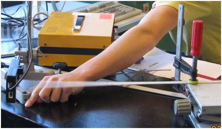
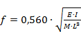
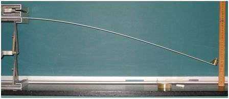
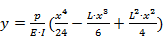
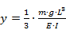
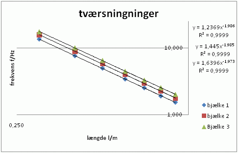
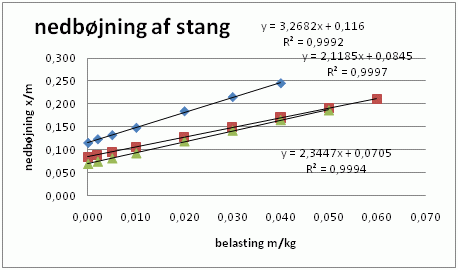
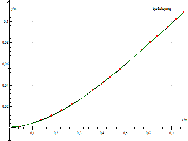
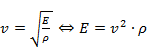
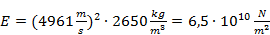

Vha simple aluminiumsprofiler kan man lave nogle spændede forsøg med nedbøjning og transversalsvingninger.
Teorien går ud over gymnasieniveau, men er velegnet til SRP.
Selve forsøgene kan sagtens laves på B- og A-niveau med simpelt udstyr.

Svingningstiden måles vha. en lysvej og Labpro tilsluttet Datalyse. Herefter kan frekvensen beregnes.
Frekvensen
er bestemt ved 
- E er materialets elasticitetsmodul [N/m2]
- I er inertimoment for tværsnit [m4]
- M er bjælkens masse [kg]
- L er bjælkens længde [m]
- f er resonansfrekvensen [Hz]
Indsættes M = m·L, hvor m er massen pr længdeenhed ses, at f er proportional med L-2.

Nedbøjningen måles bare vha. en lineal.
Der kan laves to forsøgsserier med nedbøjning.
Ved
homogen belastning er nedbøjningen bestemt ved 
- y er nedbøjningen, x er afstanden fra det faste punkt
- p =m·g/L er belastningen pr længdeenhed
- E og I defineret, som nævnt ovenfor.
Ved
belastning i endepunktet er nedbøjningen bestemt ved 

Hes er resonansfrekvensen for forskellige profiler afbildet som funktion af længden. Det bekræftes fint, at f er proportional med L-2.
Måleresultater med beregning af Youngs modul, E:
|
bjælke |
Tykkelse |
Bredde |
længde |
Masse |
Densitet |
Moment |
Tværsnit |
Modul |
|
1 |
1,59E-03 |
2,22E-02 |
1,0015 |
0,09383 |
2,66E+03 |
7,366E-12 |
3,52E-05 |
6,13E+10 |
|
2 |
1,84E-03 |
2,47E-02 |
1,0020 |
0,12164 |
2,68E+03 |
1,280E-11 |
4,54E-05 |
6,23E+10 |
|
3 |
2,11E-03 |
1,51E-02 |
1,0030 |
0,0845 |
2,65E+03 |
1,181E-11 |
3,18E-05 |
5,95E+10 |

Her ses nedbøjning ved endepunktsbelastning. Det bekræftes, at nedbøjningen er proportional med belastningen.
Udregning af youngs modul for de 3 profiler ved endepunktsbelastning:
Bjælke 1, 2, 3: E = 6,959E+10 N/m2, E = 6,178E+10 N/m2 og E = 6,178E+10 N/m2.

Her ses nedbøjningen y som funktion af afstanden x fra det faste punkt. Den grønne kurve er den teoretiske nedbøjning.
Beregning af Youngs modul: E = 5,50E+10 N/m2
Det ses, at alle forsøgene giver realistiske værdier for Young modul for aluminium.
Youngs modul kan
også bestemmes ved frekvensanalyse. Fastspænd bjælken på midten og slå med
en hammer i den ene ende. Herved dannes en stående længdebølge i stangen med
bue i enderne og knude på midten. Dsv. Lydhastigheden v
= 2·L·f, hvor L
er stangens længde og f frekvensen, så
kan måles vha. fourrieranalyse i Datalyse. Desuden gælder der:

Hvor E
er Youngs modul og r
er densiteten.
For bjælke 3 fås:

- Undervisningsnotat, BYG DTU U-047, ISSN 1396-4046 af Niels Holck.
- http://people.civil.aau.dk/~lda/Notes/DYNAMIK.pdf
- http://www.tech.plym.ac.uk/sme/strc201/tvib.htm